Brick Controls (inside)  (january 2009)
(january 2009)
Application Designer / Domain Expert / Control Designer / Core Developer
Introduction
The general task of a Brick is to generate output, i.e. visual feedback to the user and / or new output signals for the machine, based on a combination of inputs and / or user events. In the schematic below this task of a virtual Brick is visualized. In practice it's a bit more complicated, because inputs can also serve as outputs and vise-versa, but that's explained later on.

Notice that all indices starts at 1. This is mainly done to make numbering more human. As an extra advantage we now can use elements 0, for special purposes.
For each Input signal a parameter is created. A Control has at least 1 parameter, but might have more. It's up to the Brick, whether it will use these parameters or not.
There are direct inputs, like In[1], which have no connections with controls, and are only used in the calculation of the output signal.
Other inputs, like In[2], are tightly coupled to controls. In this case In[2] is coupled to Control[1]. The output generate function can't use In[2] for it's calculations, instead it must use Par[2], the result coming from the control. In that way we can prevent race conditions, assure that the latest action, either from the input or from the user is honored. Also the range of input signal can be limited within the control, and the input might even be omitted (is not required anymore). Notice that the index of the Par and the Input signal are equal. In some cases there isn't even a feedback from the control to the par, like in the Brick "Show Image", in which case also the generate output function isn't needed anymore, and thus the input sends its signal directly to the control.
Finally there are controls, like Control[2], that only react on user events, and thus has no connections with input signals.
Virtual Machine
Brick Definition
Goal is to make the creation of a brick as simple as possible. A second requirement is that the code running in the virtual machineshould be as clean as possible, without too many tricks.
Until now, this is the simplest solution found ( the code below is approximately equal to visual Brick shown above) :
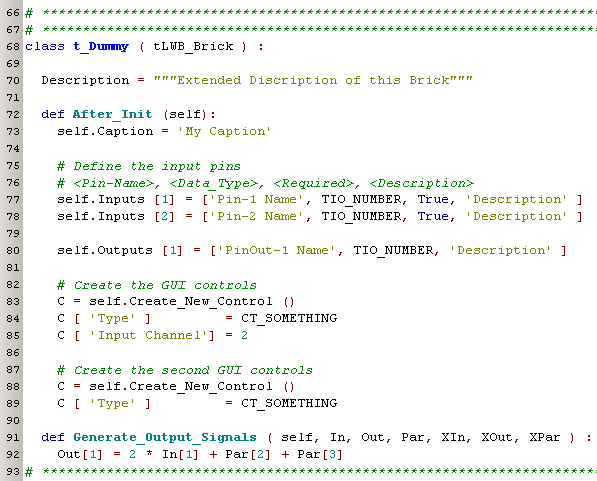
line 68: This class is automatically detected as a Brick, because its name starts with "t_". The class name without the leading "t_" is used as the name in the Libraries list. All Bricks should be derived from tLWB_Brick.
line 70: An extended description of this brick, which is shown to the user when the user hoovers over the library list or over the Brick.
line 72: The method After_Init is always required, and here the inputs / outputs and controls are defined.
line 73: The caption is used to give the brick a visual name. While we could use the class name for the caption, we've decided not to do so, because in that case our internationalization of the visual name is gone (For simplicity, the internationalization is left out in this example).
line 77,78: Definitions of the inputs. The first parameter is a short name for visual feedback to the user. The last parameter is an extended description used as feedback to user when he hoovers over the Brick. The second parameter is the type of the signal. The third parameter tells if this input needs to be present or not before a calculation will be performed.
line 80: Definitions of the outputs. The parameters are the same as for the inputs, except that the "Required" flag is missing.
line 83-85: Definition of a control, that is connected between In[2] and the calculations.
line 88,89: Definition of a control, that is not connected to an input. Depending on the complexity of the control, more parameters might be needed.
line 91: The output generation method. This method is only needed when new output signals need to be generated. The function parameters are all variables of the class itself, so it looks a bit overdone, but the advantage is that the formula becomes much clearer, because we don't need the "self" prefix.
line 92: Here the new outputs are calculated.
Loop Code
The code executed in the loop of the virtual machine is very clean and straight forward , and is very well suited for single stepping or breakpoint debugging.
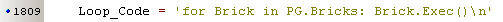
Communication
Both In and Out signals (and even Par) are derived from an intelligent list:
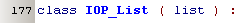
This list detects changes in the values and has some extra properties and methods for an easy communication.
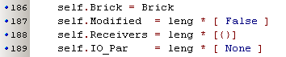
Receivers = list of dictionaries, for each pin a dictionary. When a connection is made, any brick ( possible even the brick itself ) that wants to receive this signal, add itself and the relevant pin to this dictionary. This list is used by the transmission function, to send a new value to all the receivers. This list is quit static and only when a connection is removed, one or more ( in case the output brick is removed) bricks are removed from this list.
|
In the case on the right, the Receivers of the Input signals of Brick_2 and Brick_3 will be empty. The Receiver list of Out[1] of Brick_1 will contain the inputs of Brick_2 and Brick_3: 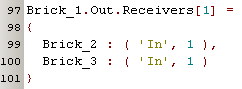 After the Exec method of Brick_1 is performed, the brick will send all changes to the Receivers (which are also of type IOP_List and thus will detect changes). |
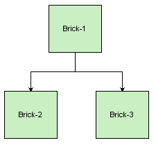 |
Bi-Directional IO
When in the above figure, Brick_3 wants to send information over the pin In[1], it has to use the same receiver list as the Receiver list of Out[1] of Brick[1], so it simply assigns the receiver list
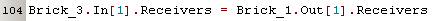
The other side of the story, if Brick_1 wants to receive information on it's Out[1], it has to add itself to the receiver list
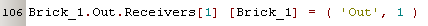
and now the Receiver list will look like
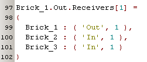
The Transmit_Changes method will send changes to items in the dictionary, except if an item is the sender.
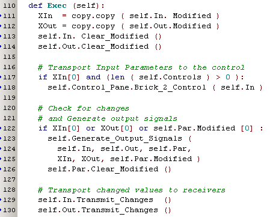
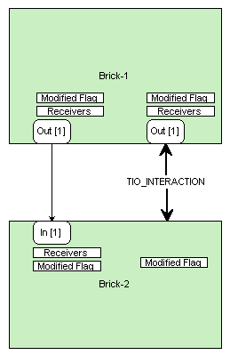